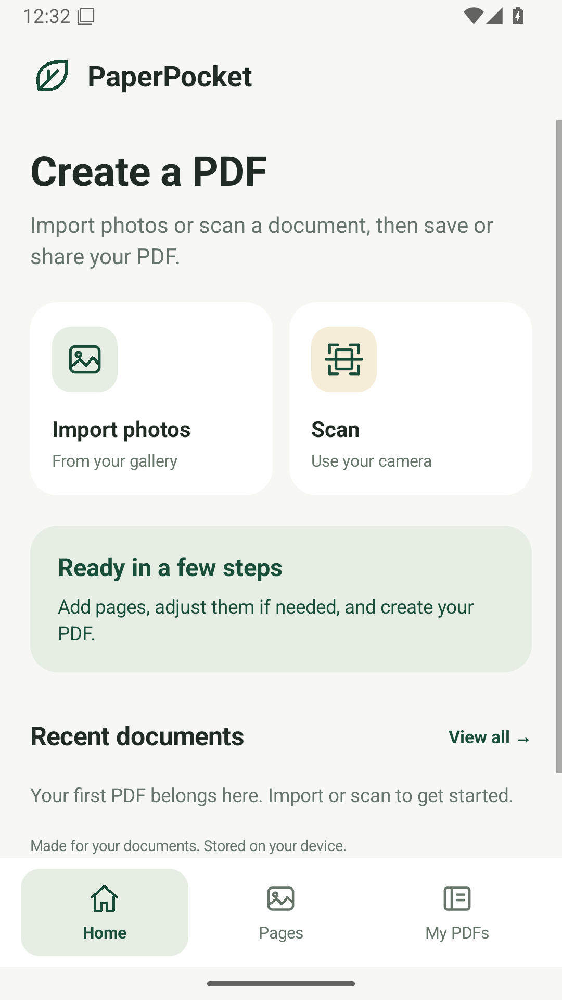
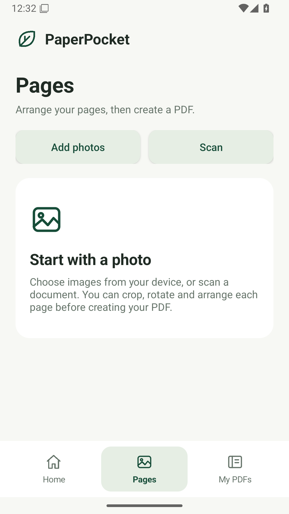

Get the pages right.
Import photos or use the document scanner. Crop, straighten, rotate and arrange the pages before you create your PDF.
Original color · Enhanced · Black & whiteTHE FREE ANDROID DOCUMENT APP
The receipt. The class notes. That form you need to send. Turn your everyday documents into tidy, shareable PDFs.
Android 8+ · Free beta · No account needed in the app
Your document processing stays on your device. You choose what to share.

Study notes → Forms → Receipts → ID copies
A LITTLE LESS ADMIN
Everything you need for a daily document task, without making the task feel like work.
Import photos or use the document scanner. Crop, straighten, rotate and arrange the pages before you create your PDF.
Original color · Enhanced · Black & whiteCompact, Balanced or High quality. Reduce a saved PDF's size and keep the original. Better source photos give better results.
150 / 200 / 300 DPI export targetsSearch your library, create folders and mark Favorites. Trash and Restore help when you change your mind.
Delete a folder, keep its PDFsView, share or save a copy. Create PDFs while the app is minimized, with progress, cancellation and optional notifications.
Your sharing app. Your destination.
A CLOSER LOOK
Three simple places to start, prepare and find your documents.
Add photos, arrange them and choose your export settings. ID-card mode puts front and back on one A4 page.
Real screenshots from the Android 1.3.0 beta, shown in their empty states. No documents are uploaded to this website.
FROM PAPER TO PDF
A sheet from the scanner or photos from your gallery—start with what you have.
Import the photos you choose, or scan using the document scanner. Up to 100 images per draft.
Crop, rotate, reorder and choose a quality profile. Use two cropped photos for a front/back ID-card PDF.
Create the PDF, find it in My PDFs and send it through your preferred sharing app.
Merge PDFs · Extract pages · Reduce file size · Extract printed Latin text
Read the limitsREADY WHEN YOU ARE
Get the free Android beta. No ads, subscriptions or in-app purchases.
Download PaperPocketThis beta is distributed through GitHub. It is not published on Google Play.
SHA-256 for the signed 1.3.0 APK:
See the linked release manifest below.Release manifest →THE USEFUL DETAILS
Import, conversion, viewing and the private library process documents on your device. You choose when to share or export. The Android app uses Google's scanner and text-recognition SDKs, which disclose technical metrics. Read the app privacy policy for the full details.
The supplied Play Protect warning says Google has not seen an app from this developer before. A valid signature and app tests do not clear Google's classification. Warning investigation is paused; no Google approval is claimed. Keep protection enabled and use Google's normal security-check guidance if an installation is blocked.
You can read this website on either. The downloadable app currently runs on Android only. Browser PDF tools and a native iOS app are not available yet.
The document scanner needs supported Google Play services; its first use may download components. A system-camera fallback is included. Merge and page extraction support PaperPocket's known image-PDF format, rather than arbitrary external PDFs. Text extraction supports printed Latin/English, up to 50 pages, and exports separate text; it does not add a searchable PDF layer.
Normal and ID-card PDF creation can continue while minimized and across activity recreation. Notifications are optional. Force-stop, reboot or Android terminating the process can interrupt a job; it does not automatically restart. Reopen the app to check the result and retry from the retained draft.
No. The result depends on the page count, image detail and source quality. Compact favors smaller files; High favors available detail. Reducing an existing PDF keeps its original and saves a smaller image-based copy when possible.
HELP SHAPE THE NEXT VERSION
A confusing button, a PDF that won't open, a feature you miss—tell us about it.
murtazaofficialskardu@gmail.com →Report on GitHub →Leave out private documents, passwords and other sensitive information.